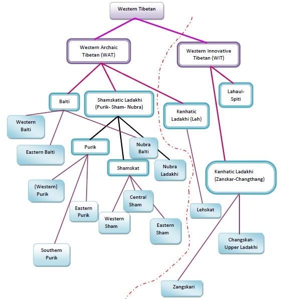
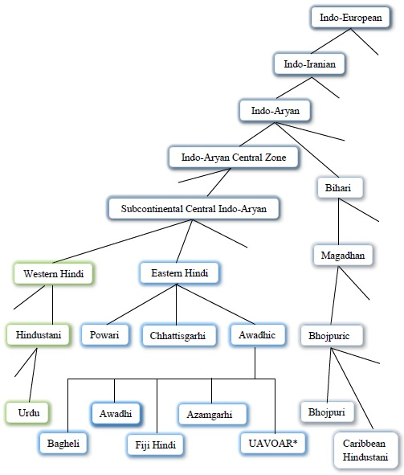
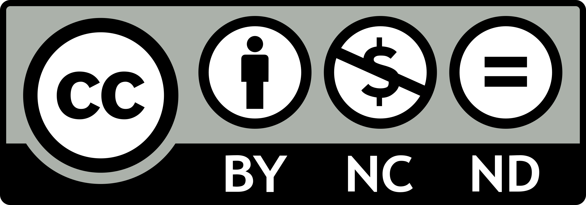

My research primarily focuses on two language groups currently: Western Tibetan and Eastern Hindi.
Western Tibetan can be classified into two subgroups: Western Archaic Tibetan (WAT) and Western Innovative Tibetan (WIT). The varieties that WAT consists of are the ones in which the initial consonant clusters and syllable-final consonants of the Old/Classical Tibetan are retained. In contrast, in the WIT varieties, they are simplified or lost with compensatory tonogenesis in some of the varieties. However, the further classification of the Western Tibetan varieties in these two subgroups is still quite rudimentary, and there is no such universally accepted classification. Following phonetic features alone, Zeisler (2011:235) classifies the dialects of the northwestern and central areas of Ladakh—Baltistan, Purik, Lower Ladakh (Sham), Nubra, and Leh into WAT group (the non-tonal 'conservative' dialects, showing initial and final consonant clusters) and dialects of the south-eastern areas of Ladakh—Upper Indus, Changthang and Zangskar into WIT group (the 'innovative' dialects where the clusters have been reduced and tonal features can be found). However, morpho-syntactically speaking, Zeisler (2011:236, 2018:78) broadly classifies the Ladakhi dialects into two groups: Shamskatic and Kenhatic. The former constituting the Shamskat dialects of Lower Ladakh in the north-west (Purik, Sham, Nubra), and the latter comprising the Kenhat dialects of Upper Ladakh in the south-east (Leh, Upper Indus, Lalok, the Changthang dialects at the border to China, Gya-Miru, and Zangskar). "One of the main differences between these two groups is that in the Kenhat dialects, no formal distinction is made between an agent and a possessor, whereas in the Shamskat dialects, these two roles are clearly distinguished" (Zeisler 2018:78). She asserts that the Tibetan varieties spoken in Himachal Pradesh (languages of Lahaul-Spiti) are closely linked to the Kenhat dialects, whereas the Balti dialects should perhaps be classified as a special subgroup of the Shamskat dialects, as they show significant differences in the use of verbal auxiliaries. The dialects of Purik further form a continuity with western Sham, while the Zangskar dialects pattern with the Upper Indus dialects (Zeisler 2018:78).
In the figure given below, I present a generalized classification of the varieties spoken in Ladakh, primarily from Zeisler (2011, 2018), besides other works. The dotted line separates the groups based on the formal distinction between an agent and a possessor, i.e., Shamskatic varieties on the left and Kenhatic varieties on the right.

Classification of Western Tibetic Varieties
The Eastern Hindi group can be divided into Chhattisgarhi, Powari, and Awadhic languages. The latter can be further be subdivided as Bagheli, Awadhi, Fiji Hindi, Azamgarhi, and Un(der)documented Awadhi Varieties (spoken) Outside the Awadh Region (UAVOAR).

Classification of Eastern Hindi Varieties along with Urdu of Western Hindi and Bhojpuri of Bihari group given

Most of the content on this site is licensed under a Creative Commons Attribution-NonCommercial 4.0 International License.